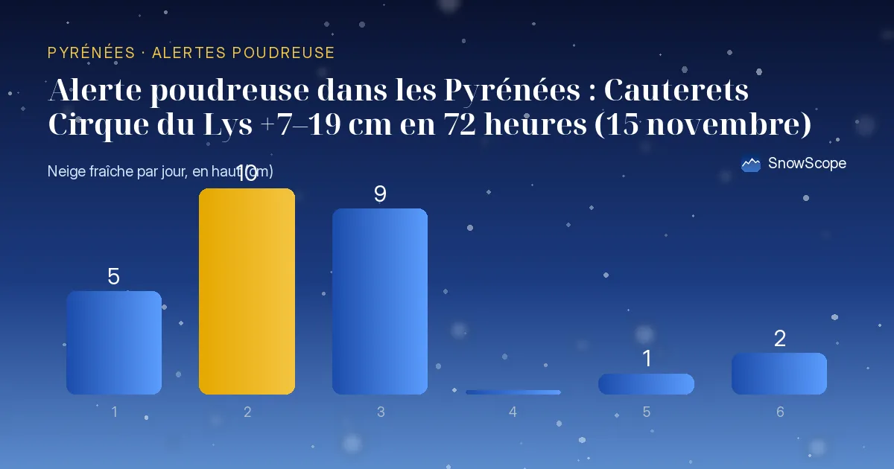

Alerte poudreuse dans les Pyrénées : Cauterets Cirque du Lys +7–19 cm en 72 heures (15 novembre)
Le 15 novembre, les Pyrénées ont connu un événement nival qui a apporté 7–19 cm aux hauts sommets en 72 heures. À Cauterets Cirque du Lys (2 420 m), l'épaisseur de neige en haut de pente atteint 9 cm maintenant, mais la pluie tombe sous 2 160 m donc le tableau est mitigé : la poudre ne persiste que là où il fait assez froid.
Consultez les prévisions neige en temps réel pour Cauterets Cirque du Lys sur l'application SnowScopeHauteurs de neige, alertes poudreuse et carte 3D, gratuitement.
Trois jours de neige sur toute la chaîne
Entre le 13 et le 15 novembre, la neige est tombée sur presque tous les grands domaines des Pyrénées. Cauterets Cirque du Lys a reçu 19 cm pendant cette période ; Candanchu et Gourette ont chacun gagné 18–19 cm. Piau-Engaly et Formigal ont pris 15–17 cm. La tempête a été la plus forte le 14 novembre.
Ces cumuls sur 72 heures sont des estimations ; les valeurs réelles dépendent de l'endroit où vous mesurez et de la façon dont le vent a déplacé la neige. La neige recouvre maintenant 1 420 km² sur la chaîne, avec 25 des 53 domaines suivis montrant de la neige sur leurs pentes supérieures — contre 20 domaines il y a seulement deux jours.
| Station | Hauteur de neige | Neige fraîche, 72 h | Attendu, jours suivants | Sommet |
|---|---|---|---|---|
| Cauterets Cirque du Lys | 9 cm | 19 cm | 3 cm | 2 420 m |
| Piau-Engaly | 8 cm | 15 cm | 3 cm | 2 527 m |
| Candanchu | 8 cm | 19 cm | 2 cm | 2 238 m |
| Gourette | 11 cm | 18 cm | 2 cm | 2 453 m |
| Formigal | 5 cm | 17 cm | 1 cm | 2 264 m |

Altitude et froid : qui garde la neige
Le 15 novembre, la neige est tombée au-dessus d'environ 2 160 m sur la chaîne. Sous cette limite, la pluie a pris le relais. Cette séparation entre neige et pluie signifie que l'épaisseur que vous lisez dépend de l'altitude. Cauterets Cirque du Lys se divise en trois zones : 4 cm au sommet (2 420 m), mais 0 cm reste à mi-montagne (2 072 m) ou à la base (1 725 m).
Données réelles des stations de montagne le 13 novembre : Certascan (2 398 m) avait 8 cm, Boí (2 537 m) en avait 6 cm, et Núria (1 971 m) en enregistrait 5 cm. Chaque station est un point fixe, donc ces chiffres montrent à quoi ressemblait le manteau neigeux à ces endroits précis, pas sur toute la pente.
Le plafond chaud monte
Le niveau de congélation le 15 novembre s'étendait de 2 400 m à 2 510 m à Cauterets Cirque du Lys — déjà proche du sommet du domaine. Le 17 novembre, ce niveau de congélation monte à 2 830–3 680 m, bien au-dessus du sommet. Quand l'air se réchauffe au-dessus d'un manteau neigeux frais, la neige mouillée dévale et durcit pendant la nuit, donc l'épaisseur de neige supplémentaire rétrécit rapidement.
C'est crucial pour la gestion de l'eau : la neige persiste plus longtemps dans les plus hauts cirques, mais les pentes sous 2 500 m perdront de l'épaisseur rapidement une fois que la pluie commence à se mélanger.
Ce qui vient ensuite
Le 18 novembre, la prévision ajoute de petites quantités : 7 cm supplémentaires à Cauterets Cirque du Lys, 6 cm à Piau-Engaly, et 15–19 cm à Candanchu. Mais les prévisions changent ; le tableau météorologique deux jours à l'avance est plus flou que celui que vous voyez la veille de votre départ.
Après le 18 novembre, le manteau neigeux aux Pyrénées est prévu en réduction. Les 1 420 km² couverts aujourd'hui retombent à environ 560 km² le 18 novembre, et seulement 16 des 53 domaines conservent de la neige sur leurs pentes supérieures.
Contexte et calendrier des avalanches
Le service d'avalanches Météo-France (Bulletin d'estimation du risque d'avalanche) évalue la zone du Cauterets Cirque du Lys au niveau de danger 1 aujourd'hui. La neige fraîche soulève des préoccupations sur les pentes raides et abritées au cours des prochains jours, donc consultez le bulletin si vous envisagez des itinéraires hors-piste.
La qualité de la poudre est meilleure dans les heures suivant la chute de neige. Les départs tôt les 16–17 novembre attrappent la meilleure neige avant que le soleil et le vent ne travaillent la surface.
Conseils aux skieurs
- Les pentes hautes et orientées nord gardent la neige fraîche le plus longtemps ; les pentes sud et les basses altitudes la perdent rapidement une fois que la pluie commence. Planifiez vos itinéraires selon l'exposition et l'altitude.
- Les relevés des stations Certascan et Boí montrent 6–8 cm de vraie neige au sol à 2 400+ m. Utilisez ces repères pour juger ce qui repose sous les skis.
- Le niveau de congélation atteint 2 830–3 680 m le 17 novembre : au-dessus de cette hauteur, plus de neige peut tomber ; en dessous, la pluie domine. Préparez des couches pour vous adapter à des conditions mixtes.
- Avant de skier hors-piste, lisez le bulletin d'avalanche de Météo-France et comprenez comment la neige fraîche superposée au vent et au réchauffement affecte la stabilité des pentes.
- Le statut des domaines change souvent : confirmez les remontées et les dates d'ouverture sur le site de chaque domaine avant de partir.
À propos de ces chiffres
Les hauteurs de neige des stations sont la neige la plus épaisse sur le haut du domaine à la date indiquée ; ce sont des estimations pour une zone, pas une mesure en un point. Les prévisions peuvent changer. Consultez toujours le bulletin d'avalanche officiel avant le hors-piste.
Bulletins d'avalanche officiels: Météo-France – Bulletin d'estimation du risque d'avalanche
Citer ce bulletin
Pour la recherche, l'enseignement ou la presse : chiffres et graphiques réutilisables librement sous CC BY 4.0 avec cette citation.
SnowScope (2026), Alerte poudreuse dans les Pyrénées : Cauterets Cirque du Lys +7–19 cm en 72 heures (15 novembre), https://snowscope.app/blog/fr/2026/11/pyrenees-cauterets-cirque-du-lys-fresh-snow-powder-alert-15-november-2026.html, consulté le 2026-11-15
SnowScope (Atlas Labs). (2026, November 15). Alerte poudreuse dans les Pyrénées : Cauterets Cirque du Lys +7–19 cm en 72 heures (15 novembre). SnowScope snow reports. https://snowscope.app/blog/fr/2026/11/pyrenees-cauterets-cirque-du-lys-fresh-snow-powder-alert-15-november-2026.html
BibTeX
@misc{snowscope2026pyreneescauteretscirqued,
author = {{SnowScope (Atlas Labs)}},
title = {Alerte poudreuse dans les Pyrénées : Cauterets Cirque du Lys +7–19 cm en 72 heures (15 novembre)},
year = {2026},
month = nov,
howpublished = {\url{https://snowscope.app/blog/fr/2026/11/pyrenees-cauterets-cirque-du-lys-fresh-snow-powder-alert-15-november-2026.html}},
note = {Published 2026-11-15 18:24 UTC; accessed 2026-11-15}
}· CC BY 4.0 · Méthodes, données et outils →
Suivre Cauterets Cirque du Lys
Gratuit : un message quand la neige arrive, et la météo chaque matin.
Autres bulletins neige

Cauterets propose 25 km de pistes pour 46 EUR, mais notre historique d'enneigement montre que la meilleure chance d'avoir de la neige est la dernière semaine de décembre.

Poudreuse fraîche dans trois stations des Pyrénées, neige mince partout, et journées chaudes qui risquent de former une croûte. Voici ce qu'il faut emporter et porter le 14 novembre.

Piau-Engaly domine la prévision avec 37 cm de neige fraîche d'ici le 13 novembre ; 24 cm sont attendus le 12 novembre.